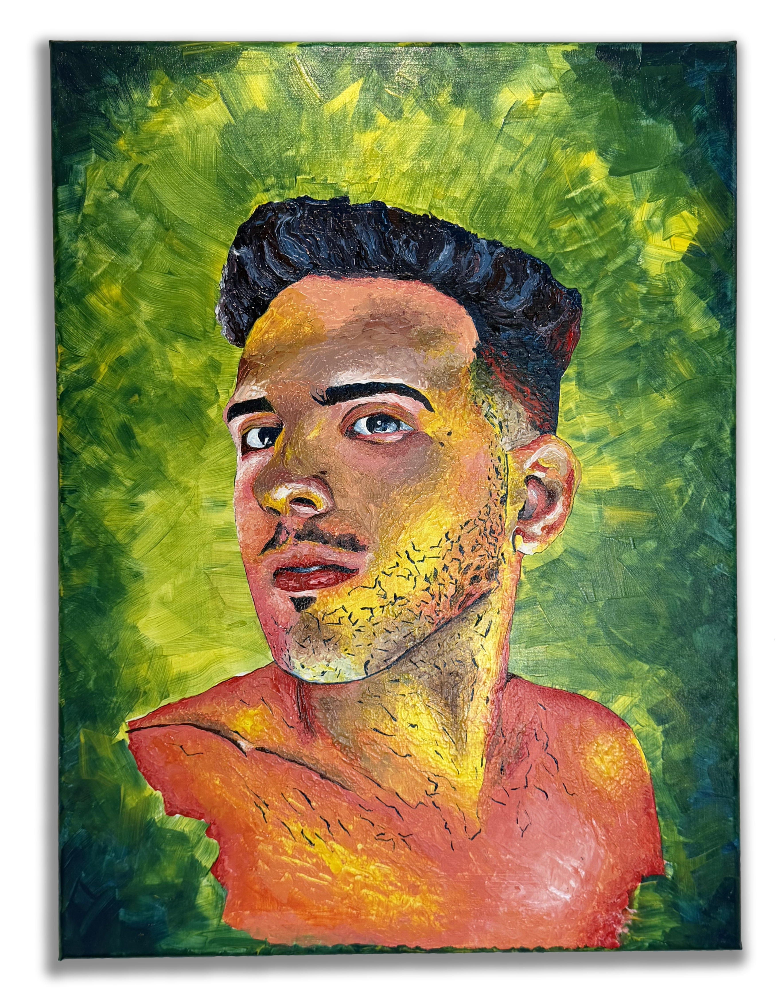

This self-portrait is not an attempt to define who I am, but to witness the ongoing process of becoming. Every brushstroke records a moment of uncertainty, curiosity, and reflection. Rather than offering certainty, the painting invites the viewer into the same question that guided its creation: Who am I? The answer is left unfinished, allowing memory, experience, and time to complete the portrait.
Inquire Back to Collection